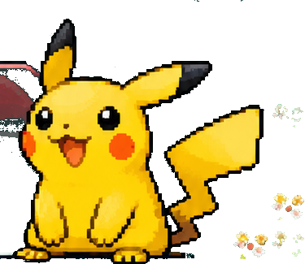

TON ESPACE COLLECTION
Bienvenue sur PokéTracker
Tes séries, tes classeurs et tes cartes préférées réunis au même endroit.

Mes séries en cours
●Tu n'as pas encore commencé de série.
CATALOGUE JCC POKÉMON
Les blocs
Choisis une grande ère du Jeu de Cartes à Collectionner.
BLOC POKÉMON
Extensions
Choisis une série pour ouvrir sa checklist.
MES CLASSEURS
Ma collection
Tes cartes possédées et les cartes à trouver.
Tes classeurs apparaîtront ici dès que tu commenceras une série.
CARTES À L'UNITÉ
Mon Pokédex
Recherche une carte et ajoute-la à ta collection personnelle.
Mes cartes à l'unité
Tu n'as pas encore ajouté de carte à l'unité.
TABLEAU DE BORD
Mes statistiques
Progression par série
Sauvegarde
Tes données restent sur cet appareil. Exporte-les régulièrement : le navigateur peut les effacer.
Progression0 %
0 possédées0 manquantes
Valeur possédée (€)—
Budget restant (€)—
Budget restant (¥)—
Valeur possédée (¥)—
Album de cartes
Par ligne
Catalogue en préparation
Les cartes de cette extension seront affichées ici.